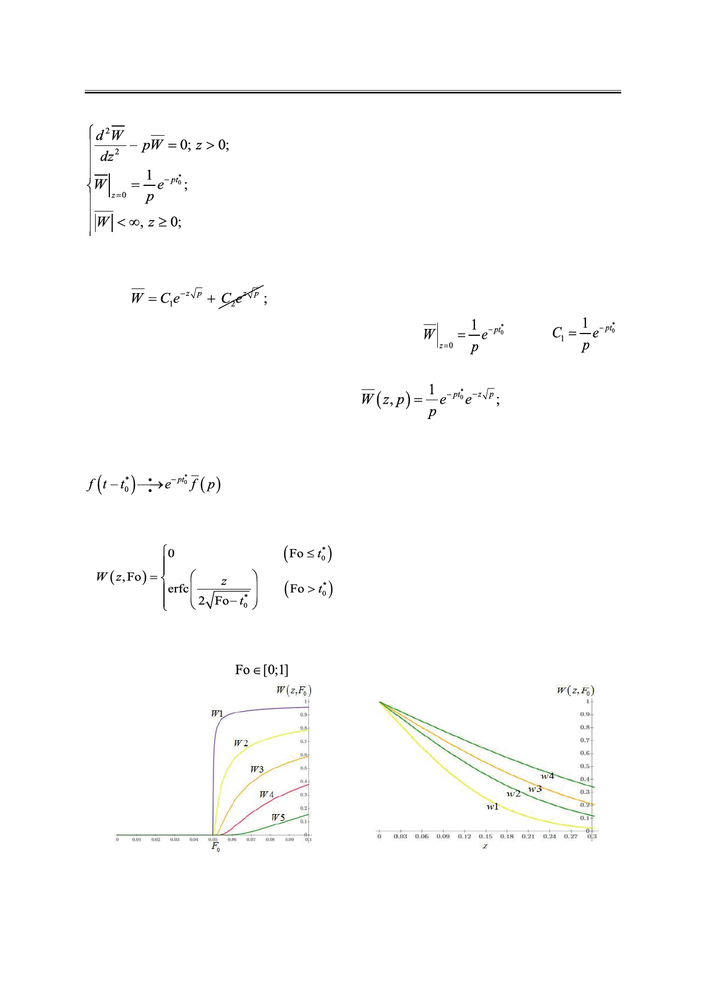

И.А. Джемесюк, С.Г. Горбунов
Таким образом, мы получили задачу Коши для однородного дифференциального
уравнения второго порядка с постоянными коэффициентами [2]. Её общее решение име-
ет вид:
ной нулю.
из условия ограниченности константу С2 принимаем рав-
Найдём константу C1, исходя из граничного условия:
. Тогда
.
Подставив С1 в выражение для общего решения однородного уравнения, получим
операционное решение тепловой задачи [1]:
Чтобы перевести полученное решение из пространства изображений в пространство ори-
гиналов, нам понадобится формула (4) и теорема запаздывания (5) [1]:
(5)
В пространстве оригиналов [1] по Лапласу решение имеет вид:
В системах компьютерной алгебры Wolfram Mathematica и Mathcad построена серия
графических зависимостей W(z, Fo) для различных сечений z и различных значений без-
размерного времени Fo (
). Вид некоторых из них представлен ниже на рис. 3–5.
Рис. 3. График зависимости безразмерной
температуры W(z, Fo) от Fo при фиксированных
значениях z: W1=W(0.01, Fo); W2=W(0.085, Fo);
W3=W(0.18, Fo); W4=W(0.27, Fo); W5= W (0.45, Fo).
Рис. 4. График зависимости безразмерной
температуры W(z, Fo) от z при фиксированных
значениях Fo: w1=W(z, 0.2); w2=W(z, 0.5);
w3=W(z, 0.8); w4=W(z, 0.1).
Российский технологический журнал 2017 Том 5 № 5
43